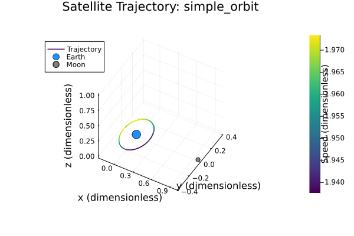
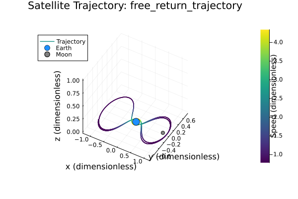

Dokumentacija za Domačo Nalogo 3
Funkcionalnosti paketa
Homework3.rk4_step — Function
rk4_step(f::Function, u::Vector{Float64}, h::Float64)Performs a single step of the classic 4th-order Runge-Kutta method for solving ODEs.
Arguments
f(u): The function defining the ODE system (e.g.,three_body_eom).u: The current state vector.h: The step size.
Returns
- The state vector at the next time step, approximated by the RK4 method.
Homework3.calculate_distances — Function
calculate_distances(x::Float64, y::Float64, z::Float64)Calculates the distance to the Earth (R) and the Moon (r) from a given point (x, y, z) in a normalized coordinate system.
The function uses the following equations:
- R = sqrt((x + μ)^2 + y^2 + z^2)
- r = sqrt((x - μ̄)^2 + y^2 + z^2)
Arguments
x::Float64: The x-coordinate of the point.y::Float64: The y-coordinate of the point.z::Float64: The z-coordinate of the point.
Returns
Tuple{Float64, Float64}: A tuple containing the calculated distances (R, r).
Homework3.three_body_eom — Function
three_body_eom(u::Vector{Float64}, mu::Float64)Computes the equations of motion for the circular restricted three-body problem in a non-dimensional, rotating frame.
This function is intended for use with an ODE solver (e.g., rk4_step).
Arguments
u: The 6-element state vector of the third body (e.g., a spacecraft):u[1:3]: Position vector (x, y, z)u[4:6]: Velocity vector (xdot, ydot, z_dot)
Returns
- A 6-element vector representing the time derivative of the state vector:
[x_dot, y_dot, z_dot, x_dot_dot, y_dot_dot, z_dot_dot]
Throws
ArgumentError: If the input state vectorudoes not contain exactly 6 elements.
Homework3.simulate_trajectory_earth_moon_system — Function
simulate_trajectory_earth_moon_system(u0::Vector{Float64}, t_span::Tuple{Float64, Float64}, h::Float64)Simulates the trajectory of a spacecraft in the circular restricted three-body problem (Earth-Moon system).
Arguments
u0::Vector{Float64}: The initial 6-element state vector [x, y, z, xdot, ydot, z_dot].t_span::Tuple{Float64, Float64}: A tuple with the start and end time for the simulation (e.g., (0.0, 15.0)).h::Float64: The time step size for the RK4 integrator.
Returns
Vector{Vector{Float64}}: A vector of state vectors, representing the trajectory at each time step.
Homework3.plot_trajectory — Function
plot_trajectory(trajectory::Vector{Vector{Float64}}, traj_type::String)Creates and saves a 3D plot of the satellite's trajectory, with the line color corresponding to the satellite's speed.
Arguments
trajectory::Vector{Vector{Float64}}: The trajectory history from the simulation.traj_type::String: A name for the trajectory type, used for the filename.
Homework3.run_and_plot_simulation — Function
run_and_plot_simulation(u0, t_span, h, traj_type)Runs a full simulation and generates a plot of the resulting trajectory.
Arguments
u0::Vector{Float64}: The initial 6-element state vector.t_span::Tuple{Float64, Float64}: The simulation time span.h::Float64: The time step size for the RK4 integrator.traj_type::String: A name for the simulation, used for saving the plot.
1 Razvoj matematičnega modela
1.1 Fizikalne konstante
Za modeliranje sistema Zemlja-Luna-satelit sem uporabil najnovejše vrednosti fizikalnih konstant, pridobljene iz uradnih virov:
- Gravitacijska konstanta $G = 6.67430 \times 10^{-11}$ m³ kg⁻¹ s⁻² - Wikipedia
- Masa Zemlje $M_{Earth} = 5.9722 \times 10^{24}$ kg - NASA Earth Fact Sheet
- Masa Lune $M_{Moon} = 7.346 \times 10^{22}$ kg - NASA Moon Fact Sheet
- Povprečna razdalja Zemlja-Luna $D_{EM} = 3.844 \times 10^8$ m - Wikipedia
1.2 Brezdimenzijski parametri
Za poenostavitev problema sem uvedel brezdimenzijske količine, kjer je $M$ masa Zemlje in $m$ masa Lune:
\[\mu = \frac{m}{M + m} \approx 0.01215\]
\[\bar{\mu} = 1 - \mu = \frac{M}{M + m} \approx 0.98785\]
1.3 Enačbe gibanja
Enačbe gibanja za krožni omejeni problem treh teles sem pridobil iz skripte domačih nalog. V vrtečem se koordinatnem sistemu so enačbe gibanja za satelit:
Najprej definiramo razdalje do Zemlje in Lune, kjer so $(x, y, z)$ koordinate satelita:
\[R = R(x, y, z) = \sqrt{(x + \mu)^2 + y^2 + z^2},\]
\[r = r(x, y, z) = \sqrt{(x - \bar{\mu})^2 + y^2 + z^2}.\]
Enačbe gibanja v vrtečem se koordinatnem sistemu so:
\[\begin{align} \ddot{x} &= x + 2\dot{y} - \frac{\bar{\mu}}{R^3}(x + \mu) - \frac{\mu}{r^3}(x - \bar{\mu}) \\ \ddot{y} &= y - 2\dot{x} - \frac{\bar{\mu}}{R^3}y - \frac{\mu}{r^3}y \\ \ddot{z} &= -\frac{\bar{\mu}}{R^3}z - \frac{\mu}{r^3}z \end{align}\]
kjer so:
- Hitrosti satelita: $\dot{x}, \dot{y}, \dot{z}$
- Pospeški satelita: $\ddot{x}, \ddot{y}, \ddot{z}$
- Razdalja do Zemlje: $R$
- Razdalja do Lune: $r$
2 Numerična metoda
2.1 Runge-Kutta metoda 4. reda
Za numerično reševanje sistema običajnih diferencialnih enačb sem uporabil klasiko Runge-Kutta metodo 4. reda (RK4). Formulo za RK4 metodo sem pridobil iz skripte za numerično matematiko pri predmetu.
Za sistem $\frac{du}{dt} = f(u)$ je en korak RK4 metode:
\[\begin{align} k_1 &= h \cdot f(u_n) \\ k_2 &= h \cdot f(u_n + \frac{1}{2}k_1) \\ k_3 &= h \cdot f(u_n + \frac{1}{2}k_2) \\ k_4 &= h \cdot f(u_n + k_3) \\ u_{n+1} &= u_n + \frac{1}{6}(k_1 + 2k_2 + 2k_3 + k_4) \end{align}\]
kjer je:
- Korak integracije: $h$
- Stanje sistema v času $t_n$: $u_n$
- Stanje sistema v času $t_{n+1} = t_n + h$: $u_{n+1}$
- Funkcija, ki opisuje odvode (enačbe gibanja): $f(u)$
2.2 Implementacija simulacije
Sistem simulira trajektorijo satelita v sistemu Zemlja-Luna z naslednjimi koraki:
- Inicializacija - Nastavitev začetnih pogojev (pozicija in hitrost satelita)
- Iterativna integracija - Uporaba RK4 metode za reševanje enačb gibanja
- Shranjevanje rezultatov - Zapisovanje pozicij in hitrosti v vsakem časovnem koraku
- Vizualizacija - Ustvarjanje 3D grafa trajektorije z barvno kodiranjem hitrosti
3 Simulacija trajektorij
3.1 Razvoj od enostavne orbite do free return trajectory
Za nalogo smo imeli simulirati free return trajectory. Da bi bolje razumeli kompleksnost tega problema, smo najprej simulirali preprosto orbitiranje satelita okoli Zemlje.
3.1.1 Enostavna orbita
Najprej smo simulirali satelit v stabilni orbiti okoli Zemlje z začetnimi pogoji:
- Pozicija: $(0.2, 0.0, 0.0)$
- Hitrost: $(0.0, 1.938, 0.0)$ - hitrost v y-smeri za krožno orbito
- Časovni interval: $[0, 1]$ brezdimenzijskih enot
- Korak integracije: $h = 0.005$

Ta simulacija prikazuje satelit v relativno stabilni krožni orbiti okoli Zemlje. Hitrost je bila izbrana tako, da satelit ostane v Zemljinem gravitacijskem polju in ne zapusti sistema. Barva črte prikazuje hitrost satelita - vidimo, da se hitrost spreminja zaradi gravitacijskih vplivov, vendar ostaja satelit v okolici Zemlje.
3.1.2 Prehod na free return trajectory
Nato smo satelitu spremenili hitrost v isti poziciji $(0.2, 0.0, 0.0)$ in dobili free return trajectory:
- Pozicija: $(0.2, 0.0, 0.0)$ - enaka kot pri enostavni orbiti
- Hitrost: $(1.954, 1.78, 0.0)$ - dodana hitrost v x-smeri
- Časovni interval: $[0, 10]$ brezdimenzijskih enot
- Korak integracije: $h = 0.005$

Dodajanje hitrosti v x-smeri $(1.954, 0, 0)$ je ključno za dosego free return trajectory. Ta dodatna hitrost omogoča satelitu, da:
- Zapusti Zemljino gravitacijsko polje - satelit dobi dovolj energije za ubežanje
- Vstopi v lunarno gravitacijsko polje - Luna privlači satelit
- Brez dodatnega goriva se vrne na Zemljo - lunina gravitacija spremeni smer gibanja
3.2 Interaktivna simulacija
Za boljše razumevanje dinamike sistema je na voljo tudi interaktivna spletna simulacija, ki omogoča eksperimentiranje z različnimi začetnimi pogoji in opazovanje, kako majhne spremembe hitrosti vplivajo na trajektorijo satelita.
3.3 Analiza rezultatov
Primerjava obeh simulacij razkriva ključne razlike:
Enostavna orbita:
- Satelit ostane v Zemljinem gravitacijskem polju
- Trajektorija je relativno stabilna in predvidljiva
- Hitrost se spreminja zaradi gravitacijskih vplivov, vendar ostaja v okolici Zemlje
Free return trajectory:
- Satelit zapusti Zemljino gravitacijsko polje
- Trajektorija je kompleksna in vključuje interakcijo z Luno
- Hitrost se dramatično spreminja med različnimi fazami poti
- Satelit se brez dodatnega goriva vrne na Zemljo
Ta primerjava demonstrira, kako majhne spremembe začetnih pogojev lahko vodijo do popolnoma različnih orbitalnih dinamik v sistemu treh teles.
5 Zaključek
Implementacija krožnega omejenega problema treh teles uspešno simulira free return trajectory v sistemu Zemlja-Luna. Uporaba RK4 metode zagotavlja natančne rezultate, medtem ko brezdimenzijski pristop omogoča splošno uporabnost modela. Rezultati kažejo kompleksno dinamiko orbitalnega gibanja in demonstrirajo praktično uporabnost za načrtovanje vesoljskih misij.